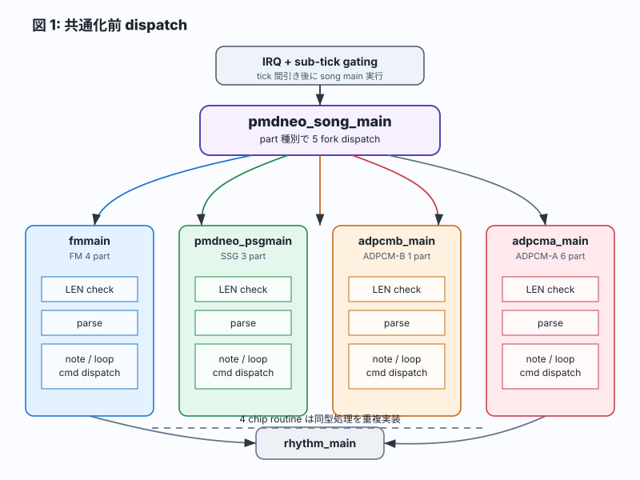
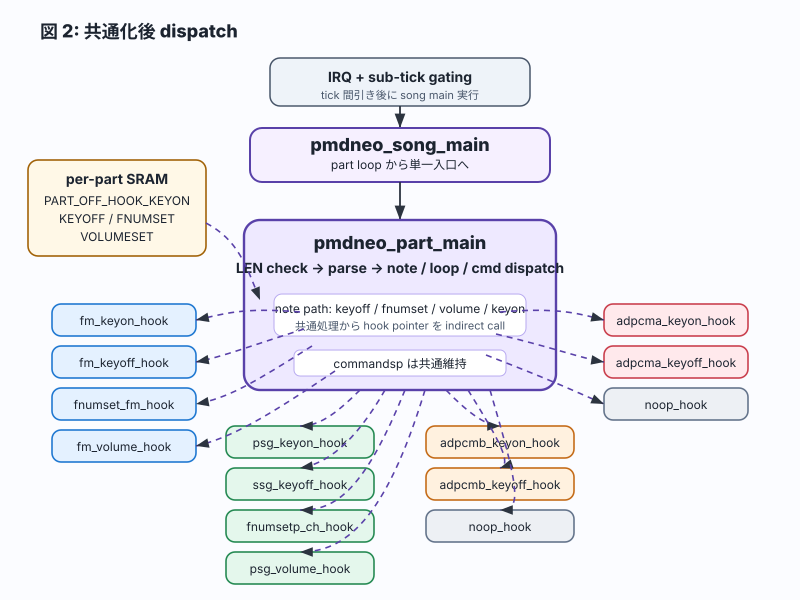
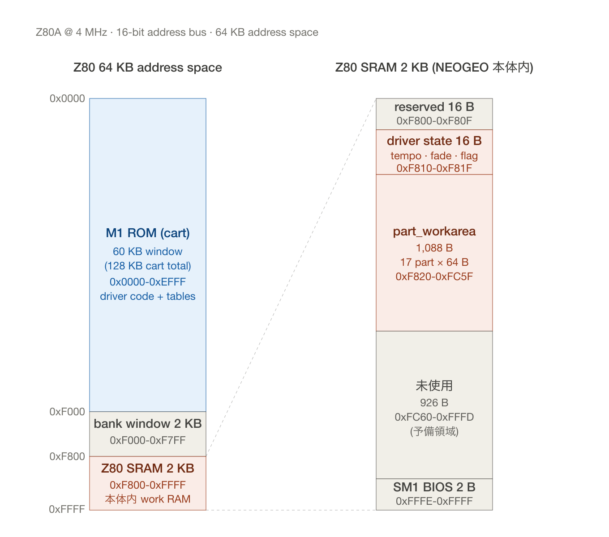
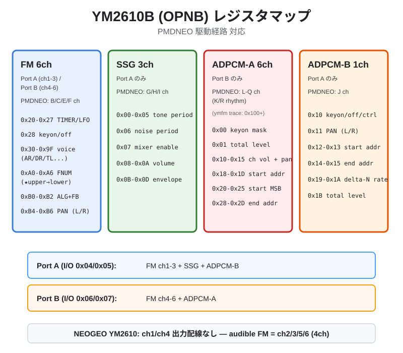
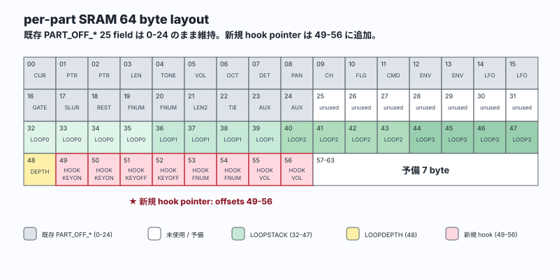

4c0fcd1
R-1
docs(design): dispatch 共通化 refactor 設計書 起票
PMDNEO Phase 9R / 2026-05-10
Phase 9R 完成 - 14 part 並行 dispatch 達成 (2026-05-10)
FM 4 + SSG 3 + ADPCM-B 1 + ADPCM-A 6 の 14 part が同一 dispatch 基盤で通過し、chip 固有差分は per-part SRAM に格納した hook pointer へ分離した。
共通化前は chip 別 main routine が同型の LEN check、parse、note / loop / command dispatch を重複保持していた。共通化後は pmdneo_part_main が dispatch 本体を担い、発音・消音・音程・音量だけを hook 経由にした。
| 項目 | 共通化前 | 共通化後 | 評価 |
|---|---|---|---|
| ファイル行数 | 2042 | 2079 | net +37。hook 12 本を追加しつつ dispatch を統合。 |
| routine 数 | pmdneo_song_main + fmmain / pmdneo_psgmain / adpcmb_main / adpcma_main + commandsp = 6 routines |
pmdneo_song_main + pmdneo_part_main + 12 chip hooks + noop_hook + 4 indirect-call wrappers + commandsp = 20 routines |
routine 数は増加。ただし重い dispatch 本体は 1 本へ集約。 |
| 主要 routine 行数 | fmmain 47、pmdneo_psgmain 60、adpcmb_main 155、adpcma_main 76。合計 338 行削除。 |
pmdneo_part_main 53 + 12 hooks 3-5 行 each + noop_hook 2。約 120 行追加。 |
概算 net reduction は約 220 行。 |
| dispatch 経路 | line 1338-1346 付近で 5 fork。 | per-part hook function pointer 経由の 1 fork。 | part 種別分岐を main loop から排除。 |


実 code 部分の増加は +59 byte、比率では +2.04% に収まった。padded 128 KB ROM では差分が出ず、実装コストは hook と indirect call wrapper の追加分として観測される。
| artifact | develop (6c329aa) | refactor (9976580) | 差分 |
|---|---|---|---|
| Z80 binary 実 byte (ihx 実 code 部分) | 2,895 byte (2.83 KB) | 2,954 byte (2.88 KB) | +59 byte (+2.04%) |
| standalone_test.rel (relocatable) | 24,507 byte | 24,759 byte | +252 byte |
| standalone_test.ihx (linker 出力) | 6,954 byte | 7,096 byte | +142 byte |
| 243-m1.m1 (padded 128 KB ROM) | 131,072 byte | 131,072 byte | ±0 byte |
NEOGEO sound CPU は Z80A @ 4 MHz、16-bit address bus により最大 64 KB のメモリ空間を扱う。Z80 binary は cart 側の M1 ROM に格納され、実行時変数は NEOGEO 本体側の Z80 SRAM に置かれる。

| 領域 | アドレス | サイズ | 役割 | 物理 |
|---|---|---|---|---|
| M1 ROM (sound program ROM) | 0x0000-0xEFFF |
60 KB (bank switch → 128 KB actual) | Z80 binary 本体 (driver code + tables) | cart ROM chip (243-m1.m1) |
| 未使用 / bank window | 0xF000-0xF7FF |
2 KB | bank 切替用 | - |
| Z80 SRAM (work RAM) | 0xF800-0xFFFF |
2 KB | 実行時変数 (driver state + part_workarea) | NEOGEO 本体 SRAM chip |
M1 ROM (128 KB) に格納される。SRAM (2 KB) ではない。
Build artifact path:
scripts/build-poc.sh → sdasz80 + sdldz80 compile standalone_test.sihx (7,096 byte hex) → sdobjcopy → 128 KB binary padded to 243-m1.m10x0000 on bootActual binary = 2,954 byte (2.88 KB)。Remaining 125 KB = empty space in M1 ROM (0xFF padding; reserved for music data / sample tables)。
| 領域 | アドレス | サイズ | 役割 |
|---|---|---|---|
| driver state | 0xF810-0xF81F |
16 byte | tempo / fade / song flag 等 |
| part_workarea | 0xF820-0xFC5F |
1,088 byte | 17 part × 64 byte (per-part) |
| 未使用 | 0xFC60-0xFFFD |
926 byte | 予備 |
| SM1 BIOS 作業領域 | 0xFFFE-0xFFFF |
2 byte | NEOGEO BIOS reserve (0x18 0xFE) |
| 経路 | port | 方向 | 役割 |
|---|---|---|---|
| YM2610 port A | I/O 0x04 (addr) / 0x05 (data) |
Z80 → chip | FM 1-3 / SSG / ADPCM-B control registers |
| YM2610 port B | I/O 0x06 (addr) / 0x07 (data) |
Z80 → chip | FM 4-6 / ADPCM-A control registers |
| 68k → Z80 cmd | I/O 0x00 (read) |
68k → Z80 | REG_SOUND (0x320000) write received via NMI |
| Z80 → 68k reply | I/O 0x0C (write) |
Z80 → 68k | LOOP CYCLE counter via REG_SOUND read |
NEOGEO 搭載 sound chip = YM2610B (OPNB) 派生。NEOGEO は YM2610 だが register 構成は YM2610B 互換。
| 音源 | ch 数 | 周波数特性 | 駆動 register |
|---|---|---|---|
| FM (4-operator FM 合成) | 6 ch (NEOGEO YM2610 では ch1/ch4 出力配線なし、audible ch2/3/5/6 の 4 ch) | 通常音色 | port A 0x20-0xB6 / port B 0x20-0xB6 |
| SSG (AY-3-8910 互換) | 3 ch | 矩形波 + noise | port A 0x00-0x0D |
| ADPCM-A (内蔵 sample) | 6 ch | 18.5 kHz 固定、sample table 参照 | port B 0x00-0x2D |
| ADPCM-B (外付 delta-T sample) | 1 ch | 任意 sample rate (reg 0x19/0x1A) |
port A 0x10-0x1B |
Z80 port 説明:
0x04 (addr) + 0x05 (data) → FM ch1-3 + SSG + ADPCM-B0x06 (addr) + 0x07 (data) → FM ch4-6 + ADPCM-A
| reg base | 範囲 | 役割 | 値範囲 | PMDNEO 実装 routine |
|---|---|---|---|---|
0x21 | 0x21 | LFO 周波数 (test 用) | 0-7 | 未使用 |
0x22 | 0x22 | LFO enable + 周波数 | bit 3 = enable | 未使用 |
0x24-0x25 | 0x24-0x25 | TIMER A | LSB / MSB | 未使用 |
0x26 | 0x26 | TIMER B counter | 0-255 (1ms 周期 約 0xE1) | NMI で 0xE1 set (1ms IRQ) |
0x27 | 0x27 | TIMER 制御 + ch3 mode | bit 0/1=TimerA/B start、bit 4/5=reset、bit 6/7=ch3 mode | 0x2A = TimerB start + ch3 normal |
0x28 | 0x28 | FM keyon/keyoff + slot mask | bit 0-2=ch index、bit 4-7=slot 4 mask | fm_keyon: 0xF1/0xF2/0xF5/0xF6、fm_keyoff: 0x01/02/05/06 |
0x2A | 0x2A | DAC data (test 用) | 8 bit PCM | 未使用 |
0x2B | 0x2B | DAC enable | bit 7 = enable | 未使用 |
0x30-0x9F | per-ch + per-slot | op パラメータ (AR/DR/SR/RR/TL/MUL/DT/RS/AM) | 各 4-7 bit | pmdneo_fm_voice_set_default で初期設定 |
0x40-0x4F | — | TL (total level) | 0=max audible、0x7F=mute | init_chip_ch2_voice で 0x18、mute init で 0x7F |
0x50-0x5F | — | RS / AR (rate scaling + attack rate) | RS bit 6-7、AR bit 0-4 | voice setup |
0x60-0x6F | — | AM / DR | AM bit 7、DR bit 0-4 | voice setup |
0x70-0x7F | — | SR (sustain rate) | bit 0-4 | voice setup |
0x80-0x8F | — | SL / RR | SL bit 4-7、RR bit 0-3 | voice setup |
0x90-0x9F | — | SSG-EG | bit 3 = enable | 0x00 (disable) |
0xA0-0xA2 | 0xA0-0xA2 | FNUM lower ch1/2/3 | 0-255 | fnumset_fm 内 port A/B 切替 (★ upper → lower で latch) |
0xA4-0xA6 | 0xA4-0xA6 | BLOCK + FNUM upper ch1/2/3 | bit 3-5=block(octave)、bit 0-2=FNUM upper | fnumset_fm で先に書込 |
0xA8-0xAA | 0xA8-0xAA | FNUM lower ch3 special | 0-255 | 未使用 |
0xAC-0xAE | 0xAC-0xAE | BLOCK + FNUM upper ch3 special | 同 | 未使用 |
0xB0-0xB2 | 0xB0-0xB2 | ALG + FB | bit 0-2=ALG(0-7)、bit 3-5=FB(0-7) | voice setup: ALG 7=全 op carrier |
0xB4-0xB6 | 0xB4-0xB6 | PAN + LFO sense | bit 6=R、bit 7=L、bit 4-5=AMS、bit 0-2=PMS | PAN: 0x80=L、0x40=R、0xC0=L+R 中央 |
| reg | 役割 | 値範囲 | PMDNEO 実装 |
|---|---|---|---|
0x00-0x01 | ch1 tone period | 12 bit | fnumset_ssg / fnumsetp_ch |
0x02-0x03 | ch2 tone period | 同 | 同 |
0x04-0x05 | ch3 tone period | 同 | 同 |
0x06 | noise period | 5 bit | 未使用 |
0x07 | mixer (tone/noise enable) | bit 0-2=tone(0=enable)、bit 3-5=noise(0=enable) | init_ssg_voice: 0x38=tone enable for ch1/2/3 |
0x08-0x0A | ch1/2/3 volume | bit 0-3=vol(0-15)、bit 4=envelope select | pmdneo_psg_keyon: vol 0x0F=max |
0x0B-0x0C | envelope period | 16 bit | 未使用 |
0x0D | envelope shape | 4 bit | 0x00=disable |
| reg base | 範囲 | 役割 | 値範囲 | PMDNEO 実装 |
|---|---|---|---|---|
0x00 | 0x00 | keyon/keyoff mask | bit 0-5=ch1-6 keyon(1=on)、bit 7=damp | adpcma_keyon_simple: 0x01-0x20 で個別 keyon |
0x01 | 0x01 | total level | 0-63 | adpcma_init: 0x3F (max) |
0x08-0x0D | per-ch | sample 配置 (test 用) | — | 未使用 |
0x10-0x15 | per-ch | ch1-6 個別 vol + L/R | bit 0-4=vol、bit 6=R、bit 7=L | adpcma_init: 0x00 (中央+max vol) |
0x18-0x1D | per-ch | start address LSB (sample 開始/256) | 0-255 | adpcma_keyon_simple: sample table から書込 |
0x20-0x25 | per-ch | start address MSB | 0-255 | 同 |
0x28-0x2D | per-ch | end address LSB / MSB | 0-255 | 同 |
ymfm trace では port B reg は 0x100+ でログされる。trace 解析時は 0x100 を引いて chip 内 reg 番号として読む。
| reg | 役割 | 値範囲 | PMDNEO 実装 |
|---|---|---|---|
0x10 | keyon/keyoff + control | bit 7=start、bit 0=reset、bit 4=repeat | init_adpcmb_beat: 0x80(start)、adpcmb_keyoff: 0x01(reset) |
0x11 | L/R PAN | bit 6=R、bit 7=L | init_adpcmb_beat: 0xC0 (L+R) |
0x12-0x13 | start address LSB/MSB | 0-255 | BEAT_START_LSB/MSB (samples.inc 経由) |
0x14-0x15 | end address LSB/MSB | 0-255 | BEAT_STOP_LSB/MSB (samples.inc 経由) |
0x16-0x17 | delta-N delta limit | 16 bit | 未使用 |
0x19 | delta-N LSB (sample rate 制御) | 0-255 | init_adpcmb_beat: 0x96 |
0x1A | delta-N MSB | 0-255 | init_adpcmb_beat: 0x6E (約 24 kHz) |
0x1B | total level | 0-255 | init_adpcmb_beat: 0xFF (max) |
| chip | 役割 | port | 主要 reg | PMDNEO routine |
|---|---|---|---|---|
| TIMER-B | 1ms IRQ source | port A | 0x26/0x27 | NMI 内 init |
| FM | keyon/off | port A | 0x28 | fm_keyon / fm_keyoff |
| FM | voice setup | port A/B | 0x30-0x9F | pmdneo_fm_voice_set_default |
| FM | FNUM | port A/B | 0xA0-0xA6 | fnumset_fm (★ upper→lower 順) |
| FM | PAN | port A/B | 0xB4-0xB6 | nmi_cmd_5 内 hardcoded |
| SSG | tone / mixer / volume | port A | 0x00-0x0D | init_ssg_voice / fnumsetp_ch / pmdneo_psg_keyon |
| ADPCM-A | sample keyon / volume | port B | 0x00-0x2D | adpcma_init / adpcma_keyon_simple |
| ADPCM-B | delta-T sample control | port A | 0x10-0x1B | init_adpcmb_beat / adpcmb_keyon / adpcmb_keyoff |
0xA4+ch) → lower (0xA0+ch) の順。spec lower→upper 想定だが MAME ymfm 実装で逆順 latch。詳細は ADR-0008 / 設計書 8 章。0x100+ で記録 (port A の 0x00-0xFF と区別)。解析時は 0x100 を引いて chip 内 reg 番号として読む。既存 PART_OFF_* 25 field、offset 0-24 は変更なし。LOOPSTACK 32-47 と LOOPDEPTH 48 に衝突しない 49-56 を hook pointer 領域として使用した。
| field 名 | offset | size | 用途 |
|---|---|---|---|
PART_OFF_HOOK_KEYON |
49 | 2 bytes | note 発音 hook pointer |
PART_OFF_HOOK_KEYOFF |
51 | 2 bytes | note 更新前 / gate 用 keyoff hook pointer |
PART_OFF_HOOK_FNUMSET |
53 | 2 bytes | chip 別 fnumset hook pointer |
PART_OFF_HOOK_VOLUMESET |
55 | 2 bytes | chip 別 volume hook pointer |

PART_OFF_HOOK_KEYON = 49 ; 2 bytes
PART_OFF_HOOK_KEYOFF = 51 ; 2 bytes
PART_OFF_HOOK_FNUMSET = 53 ; 2 bytes
PART_OFF_HOOK_VOLUMESET = 55 ; 2 bytesChip 固有処理は keyon、keyoff、fnumset、volume の hook に分け、共通 dispatch 本体から呼び出す。ADPCM 系の未使用 hook は noop_hook に寄せ、dispatch 側の分岐を増やさない。
| hook 名 | 役割 | 元 routine |
|---|---|---|
fm_keyon_hook | FM keyon (ch index B) | fnumset_fm + fm_keyon |
fm_keyoff_hook | FM keyoff | fm_keyoff |
fnumset_fm_hook | FM fnumset | fnumset_fm |
fm_volume_hook | FM volume (later phase) | stub |
psg_keyon_hook | SSG keyon | pmdneo_psg_keyon |
ssg_keyoff_hook | SSG keyoff | ssg_keyoff |
fnumsetp_ch_hook | SSG fnumset | fnumsetp_ch |
psg_volume_hook | SSG volume (later phase) | stub |
adpcmb_keyon_hook | ADPCM-B keyon | adpcmb_keyon |
adpcmb_keyoff_hook | ADPCM-B keyoff | adpcmb_keyoff |
adpcma_keyon_hook | ADPCM-A keyon (ch index B) | adpcma_keyon_simple |
adpcma_keyoff_hook | ADPCM-A keyoff (natural end) | noop |
noop_hook | common noop (ADPCM FNUMSET / VOLUMESET) | ret 1 instruction |
Phase 9R は設計起票から dispatch 共通化、FM / SSG / ADPCM-B 復活までを同日内の小さな sub-step で積み上げた。最後の 9976580 で ADPCM-B と beat.wav を足し、14 part milestone に到達した。
4c0fcd1
docs(design): dispatch 共通化 refactor 設計書 起票
ea34859
feat(driver): dispatch 共通化 refactor 実装 (L baseline pass)
430e50e
feat(driver): FM 4 part 復活 + hook B 引数 fix + voice setup
9e5f6e6
feat(driver): SSG 3 part + PAN 分離 (BC=L、EF=R)
9976580
feat(driver): ADPCM-B + beat.wav + 14 part milestone
Audio gate は R-3 baseline から R-5c まで段階的に確認した。R-5c では rebuild MD5 306828b9、wav peak L 100% / R 100%、J 鳴動、14 part 完成を確認した。
| sub-step | rebuild MD5 | FM keyon count | ADPCM-A keyon count | wav peak | user 聴感 |
|---|---|---|---|---|---|
| R-3 baseline | 63345f63 | 0 (comment out) | 129 | L 42% / R 52% | drum 6ch OK |
| R-5a (FM) | d6500d44 | 32 (0xF1/F2/F5/F6 × 8) | 129 | L 52% / R 55% | BCEF 鳴動 |
| R-5b (+SSG+PAN) | 83947c0b | 32 + SSG 27 vol write | 129 | L 100% / R 100% | FM L/R + SSG OK |
| R-5c (+ADPCM-B) | 306828b9 | same | same | L 100% / R 100% | J 鳴動、14 part 完成 |
ADPCM-B hook 経路の発音確認には ngdevkit example の beat.wav を使用した。VROM area は BEAT_START 0x002A00 から BEAT_STOP 0x00A800 までを割り当てた。
vendor/ngdevkit-examples/00-template/assets/beat.wavBEAT_START 0x002A00BEAT_STOP 0x00A800、0x7E byte ngdevkit chunk; Driver path
init_adpcmb_beat:
; reg 0x12-0x15 に BEAT_START / BEAT_STOP を設定
; MML
t140 l2 o5 [ a ]4MML は half-note interval の 4-shot loop。ADPCM-B hook 経路の発音確認に使用。
Phase 9R の成果は 14-part milestone commit と develop merge へ進める。次 phase では gate cmd / fade-in / compile.py / multi-tempo を clean dispatch 上で進める。